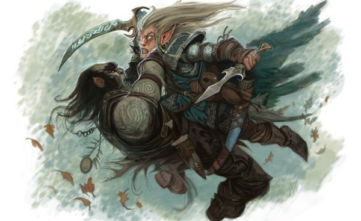

Coups critiques
Voici une aide de jeu pour mettre un peu de piquant dans les combats et localiser les blessures importantes.
20 Naturel
Pour un jet de dé d'attaque de 20 naturel, c'est-à-dire sans prendre en compte les éventuels bonus ou malus, l'attaque portée est un coup critique. L'idée est alors de donner un choix rapide au joueur avant de lancer les dégâts :
- Relancer tous les dés de dégâts (comme le spécifient les règles de Combat)
ou, si l'attaque est au corps à corps
- Infliger les dégâts normaux et lancer un d20 et un d10 pour déterminer un effet spécial et affiner la localisation.
Effet
| d20 | Type | Effet |
| 1 | Surprise | La cible est surprise par la violence du coup. Les attaques contre elle ont un avantage jusqu'à la fin de son prochain tour. |
| 2 | Surprise | Le coup oblige la cible à reculer de [Mod.For] x 1,50 mètre (minimum 1,50 mètre). |
| 3 | Objet | Le coup démantèle l'armure (ou le bouclier) de la cible. Sa CA baisse de 1 (cumulable). Jet d'Intelligence DD 10 pour la réparer lorsqu'elle est ôtée. |
| 4 | Objet | Le coup fracasse l'armure (ou le bouclier) de la cible. Sa CA baisse de -2 (cumulable). Jet d'Intelligence DD 15 pour la réparer lorsqu'elle est ôtée. |
| 5 | Objet | Le coup fracasse l'arme (ou l'objet) que la cible a en mains. Elle se brise si les dégâts infligés sont supérieurs ou égaux aux dégâts max de l'arme de la cible. |
| 6 | Jambe | La cible est déséquilibrée. Elle souffrira d'un désavantage à ses attaques jusqu'à la fin de son prochain tour. |
| 7 | Jambe | La cible doit réussir un jet de sauvegarde de Constitution DD 10 pour ne pas tomber à terre. |
| 8 | Jambe | La cible doit réussir un jet de sauvegarde de Constitution DD 15 pour ne pas tomber à terre. |
| 9 | Jambe | La cible doit réussir un jet de sauvegarde de Constitution DD 20 pour ne pas tomber à terre. |
| 10 | Jambe | Le coup ouvre la jambe. Dégâts max, la cible tombe à terre et l’hémorragie fait perdre 1 pv/niv/round (stabilisation possible). |
| 11 | Bras | La cible a failli lâcher ce qu'elle a en mains. Elle souffrira d'un désavantage à ses attaques jusqu'à la fin de son prochain tour. |
| 12 | Bras | La cible doit réussir un jet de sauvegarde de Constitution DD 10 pour ne pas lâcher ce qu'elle tient dans sa main. |
| 13 | Bras | La cible doit réussir un jet de sauvegarde de Constitution DD 15 pour ne pas lâcher ce qu'elle tient dans sa main. |
| 14 | Bras | La cible doit réussir un jet de sauvegarde de Constitution DD 20 pour ne pas lâcher ce qu'elle tient dans sa main. |
| 15 | Bras | Le coup ouvre le bras. Dégâts max, la cible lâche ce qu'elle tenait et l’hémorragie fait perdre 1 pv/niv/round (stabilisation possible). |
| 16 | Tête | Le coup tape la tête. La cible est sonnée et souffrira d'un désavantage à ses attaques jusqu'à la fin de son prochain tour. |
| 17 | Tête | Le coup tape fortement la tête. La cible est étourdie jusqu'à la fin de son prochain tour. |
| 18 | Tête | Le coup projette du sang dans les yeux de la cible. Celle-ci est aveuglée jusqu'à la fin de son prochain tour. |
| 19 | Tête | Le coup ouvre la tête. Dégâts max et l’hémorragie fait perdre 1 pv/niv/round (stabilisation possible). |
| 20 | Tête | Le coup ouvre la tête. Jet de sauvegarde de Constitution DD 15 de la cible pour dégâts max x 2, sinon dégâts max x 4. |
Localisation
| d10 | 1 | 2 | 3 | 4 | 5 | 6 | 7 | 8 | 9 | 10 |
| Jambes | Pied G | Pied D | Tibia G | Tibia D | Genou G | Genou D | Cuisse G | Cuisse D | Fesse G | Fesse D |
| Bras | Main G | Main D | Avant-bras G | Avant-bras D | Coude G | Coude D | Bras G | Bras D | Épaule G | Épaule D |
| Tête | Joue G | Joue D | Cou | Bouche | Oreille G | Oreille D | Nez | Crâne | Oeil G | Oeil D |
| G = Gauche / D = Droite | ||||||||||

Écrit par blueace